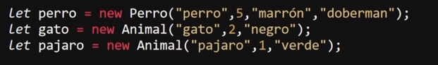

La "herencia" se basa en generar una clase "hija" que sea capaz de utilizar todos los metodos y atributos de su predecesora a la vez que añade atributos y metodos propieos, por su puesto que se puede definir cuales de los atributos heredara, ya que si alguno de estos no es necesario simplemente puede ser ignorado y de ese modo la clase hija no poseera este atributo, sin embargo podra hacer uso de todos los metodos de la clase horiginal.
La herecia es un concepto unilateral, lo que significa que unicamete la clase hija puede hacer uso de los atributos y metodos de la clase padre y no alrevez.
La Estructura de la declaración de una clase hija es similar a la de una clase normal, ya que tambien se inicia empleando la palabra reservada "class" seguido del nombre de la clase y de las llavez ( { } ) que almacenan el bloque de codigo, tambien es necesario indicar un cosntructor para lo cual se sigue empleando la palabra resevada "constructor" el cual a su vez sigue manteniendo su estructura, sin embargo se diferencia en:
-
Entre el nombre de la clase y las llavez del bloque de ingresa la palabra clave "extends" seguido del nombre de la clase padre, de este modo se indica que se trata de una clase hija y se indica de cual clase heradara sus atributos y metodos.
-
EL cosntructor vuelve a definir las datos que utilizara dentro de parentesis, sin embargo no es necesario que se vuelba a definir los atributos ya establecidos en la clase padre, para heredar estos atributos se emplea la palabra clave "super" segida de parentesis "()" los cuales albergaran los nombres de los atributos a heredar, a su vez dentro de este cosntructor se puede definir nuevos atributos propios de la clase hija, para hacerlo se sigue el msimo procedimeitno que el de la clase padre: se incluye dentro de los datos que empleara el constructor y se define utilizando la palabra clave "this.".
`
De este modo la clase hija heredara los atributos seleccionadosa la vez que todas los metodos de la clase padre, a la par que sera capaz de generar sus propios metodos y atributos.
Ejemplo

En este ejemplo se puede apreciar la estructura de la declaración de una clase hija llamada "Perro", la cual herada los atributos y metodos de la clase "animal" (su nombre se cambio a Animal), la cual a sido empleada en los ejemplos anteriores, a la vez que añade un nuevo atributo llamado "raza" y un nuevo metodo llamado "ladrar.
El uso y llamado de una clase hija es exactamete igual de el de una clase normal, no se diferencia en nada.

En este segundo ejemplo se genera un objeto "perro" con la clase "Perro" junto con los objetos "gato" y "pajaro" utilizando la clase "Animal".
Nota: No se puede definir un objeto con el mismo nombre que la clase.
Nota: a su vez la clase padre no puede usar ni los atributos ni metodos de las clases hijas.